Research Assistant Professor
Hong Kong Institute of AI for Science
City University of Hong Kong (CityU)
Email:
jiayuliu@cityu.edu.hk
Office: City University of Hong Kong, Kowloon, Hong Kong SAR.
I am a Research Assistant Professor at the
Hong Kong Institute of AI for Science,
City University of Hong Kong (CityU).
I received my Ph.D. from
the School of Artificial Intelligence and Data Science,
University of Science and Technology of China (USTC),
where I was a member of the
BASE Group
of the
State Key Laboratory of Cognitive Intelligence, co-supervised by Prof.
Enhong Chen
and Prof.
Zhenya Huang.
From January 2025 to January 2026, I was fortunate to visit Prof.
Yee Whye Teh's group at the University of Oxford.
I received my Bachelor degree in Applied Mathematics from USTC in July, 2020.
My research goal is to endow machines with human-like abilities — such as knowledge learning and reasoning, latent reasoning, and self-evolving — to resolve real-world problems. I am also interested in the application of AI to specific domains, especially AI4Math: how to make AI collaborate better with mathematicians and assist in mathematical theorem proving.
( *, Corresponding author )
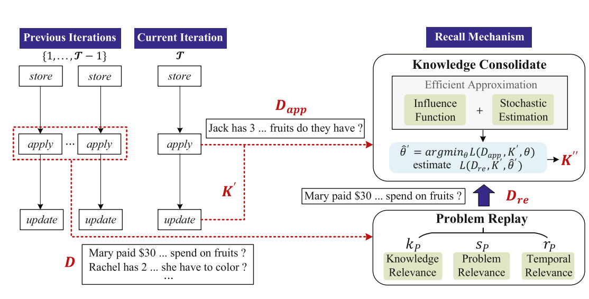
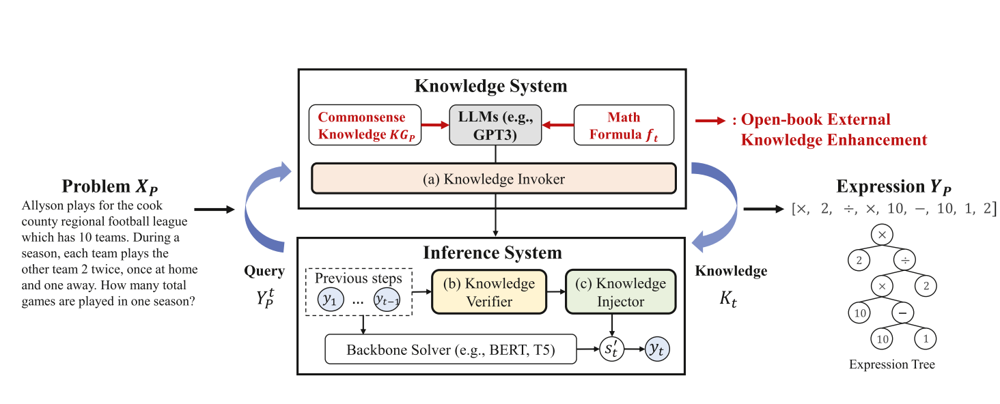
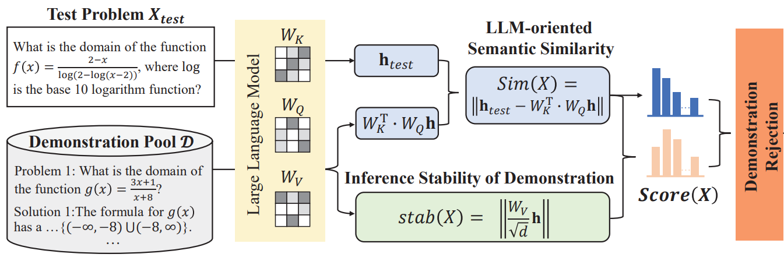
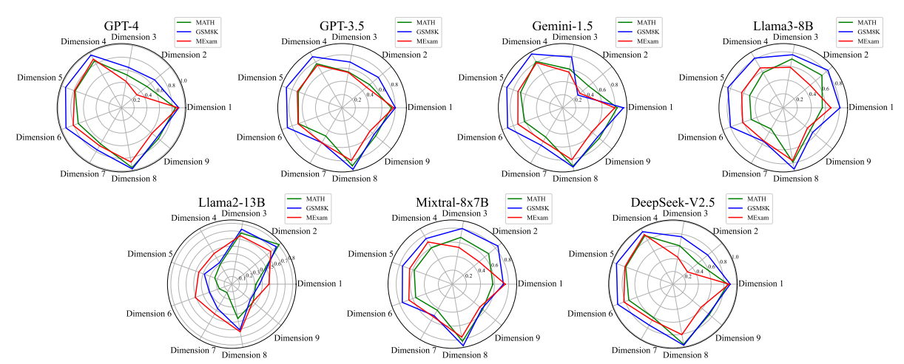
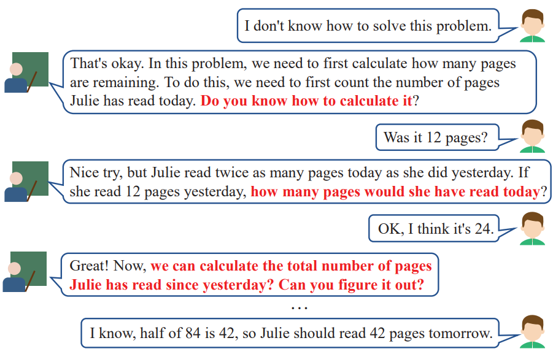
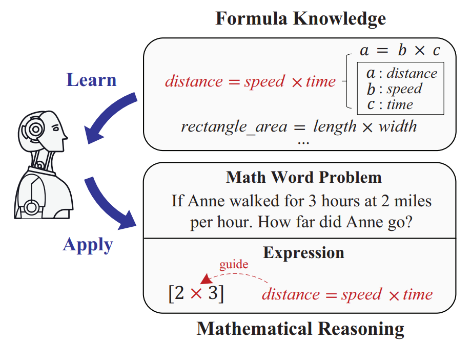
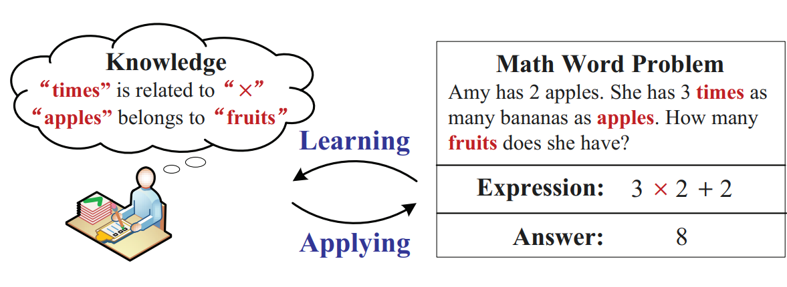
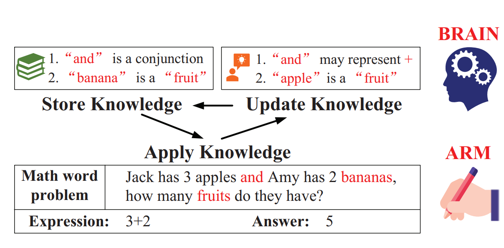
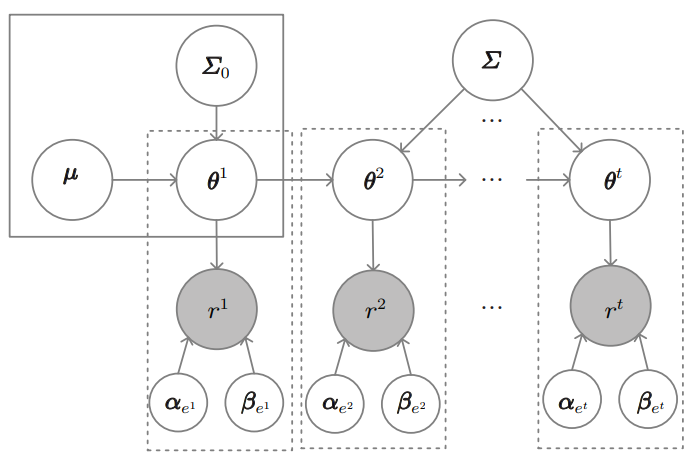
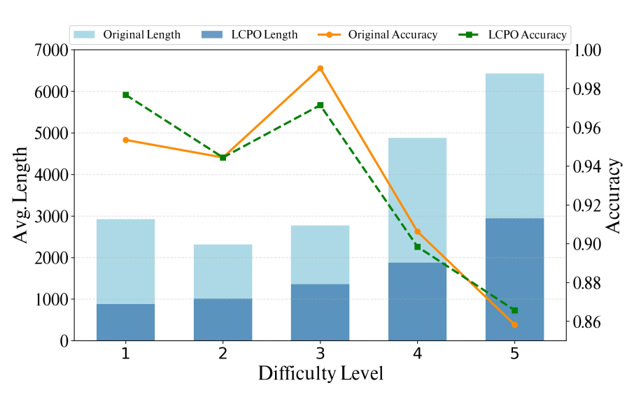
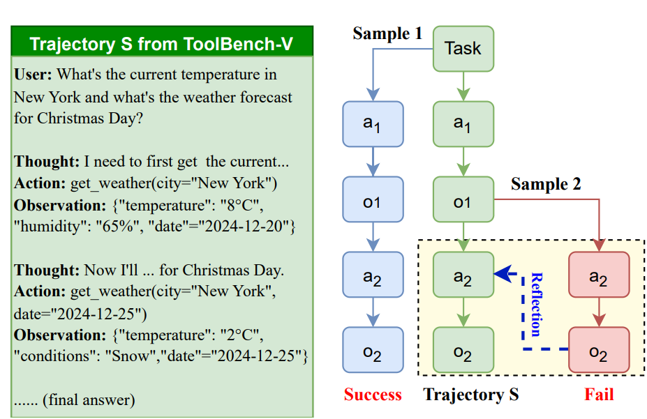
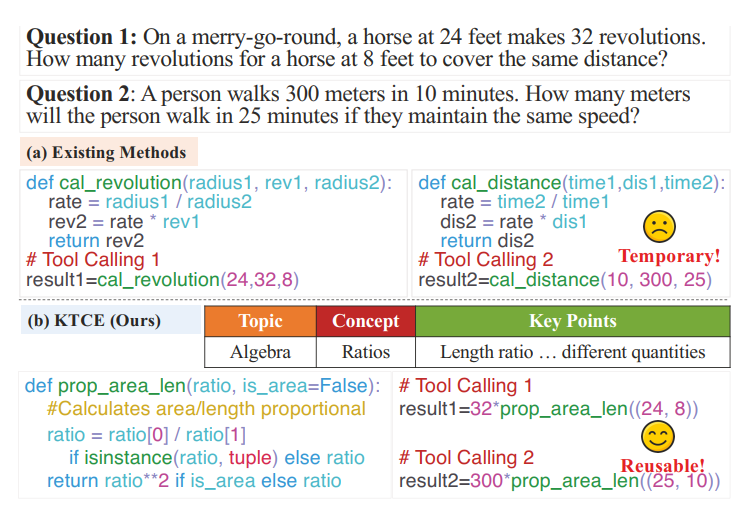
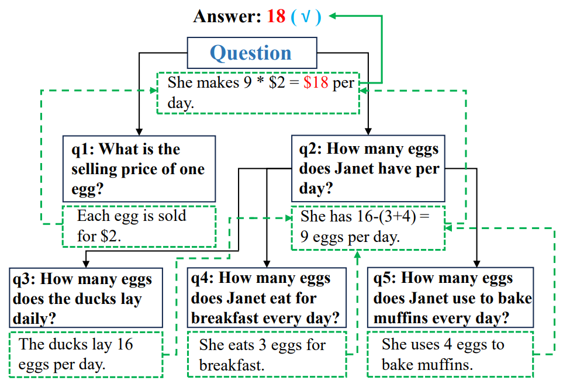
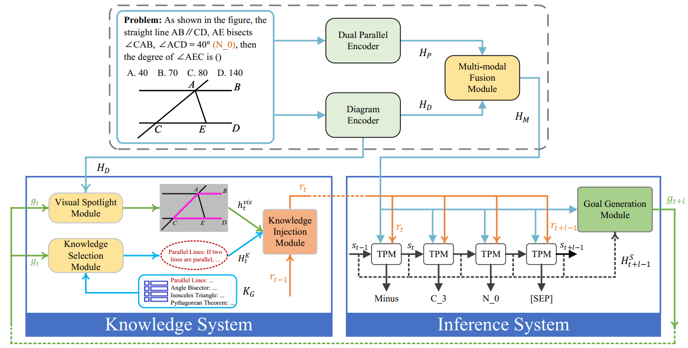
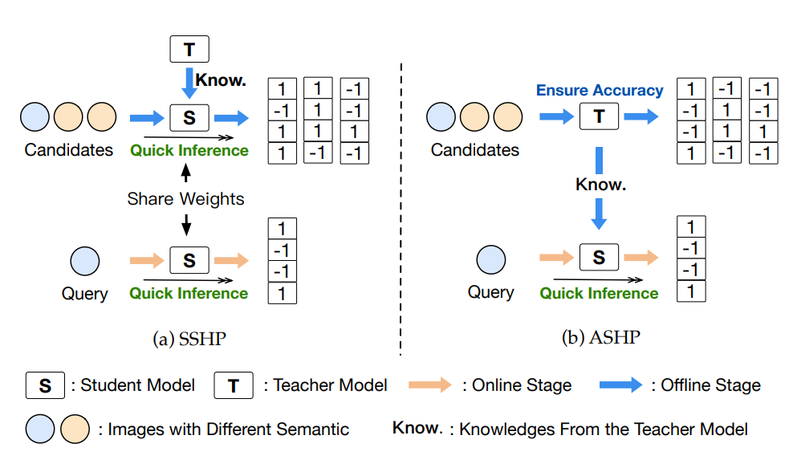
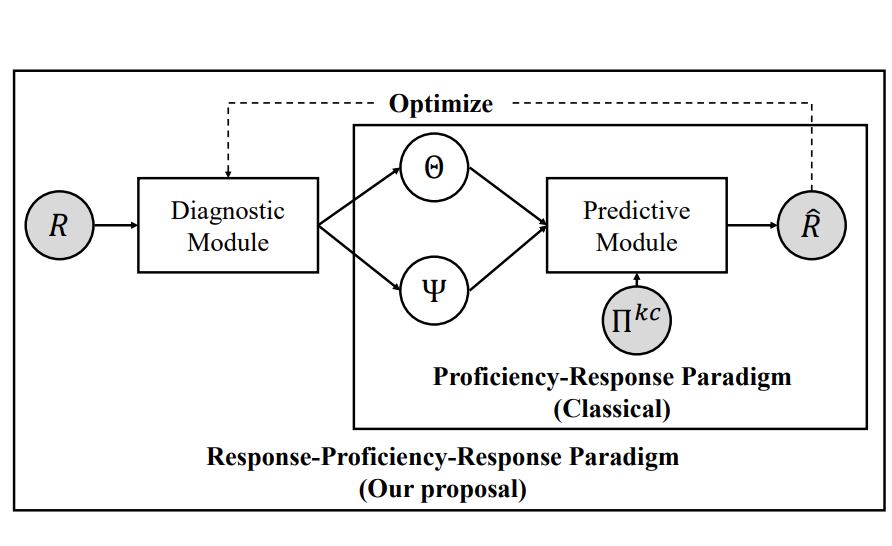
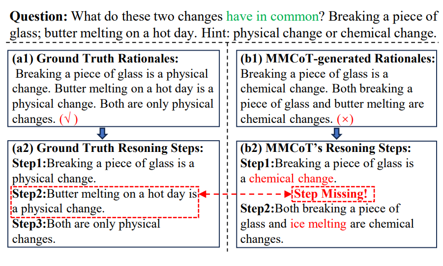
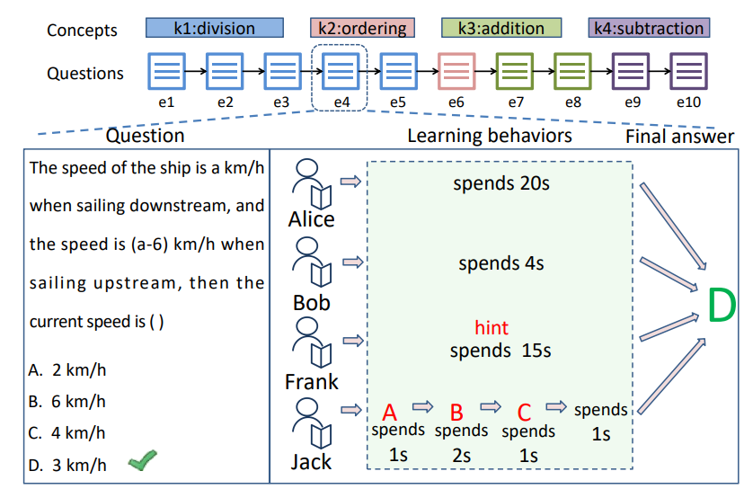
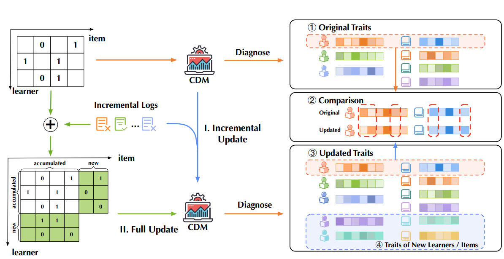
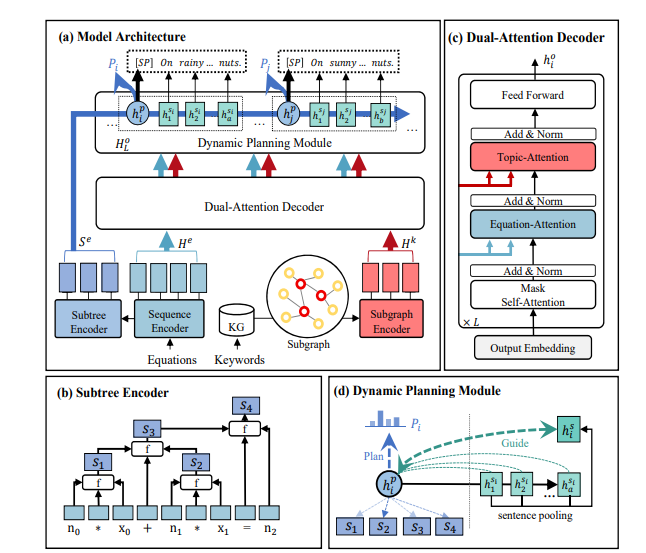
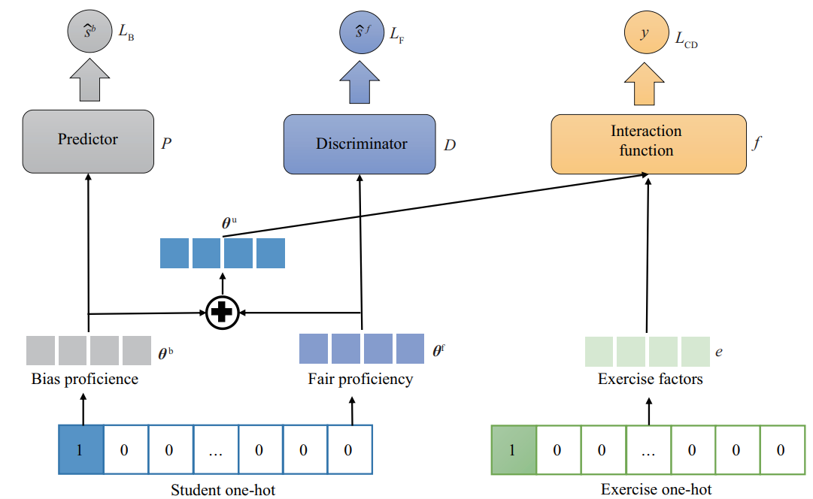